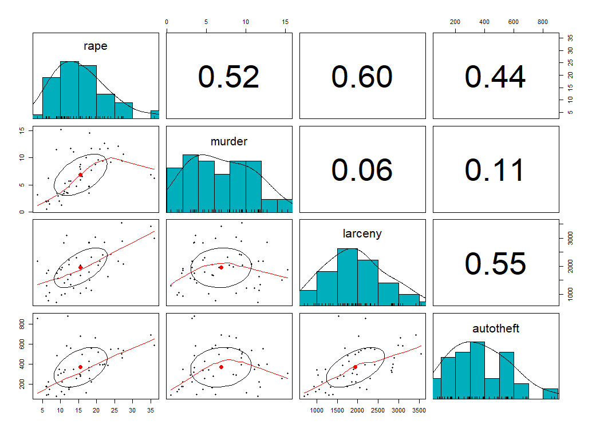

The graph shows the proportion of autotheft for different regions in the US. There are four regions in the US: Northeast, Midwest, South and West. These regions can be further divided. For example, the region west can be divided into Mountain and Pacific. proportion_theft is defined by taking the absolute value of car theft divided by the population size.
We see that the West has the largest amount of car theft and the Midwest has the smallest amount of car theft. We see that for some regions there are some division dominating such as Northeast. There, New England clearly dominates over the Mid Atlantic in terms of car theft.
The graph shows the correlation between four variables from the uscrime dataset. The variables are: rape,murder,larceny, and autotheft. We see weak correlation between murder and larceny & murder and autotheft. On the other hand, we see high correlation coefficient for rape and murder, rape and larceny, rape and autotheft, & larceny and autotheft.
Coming up next
Second Assignment